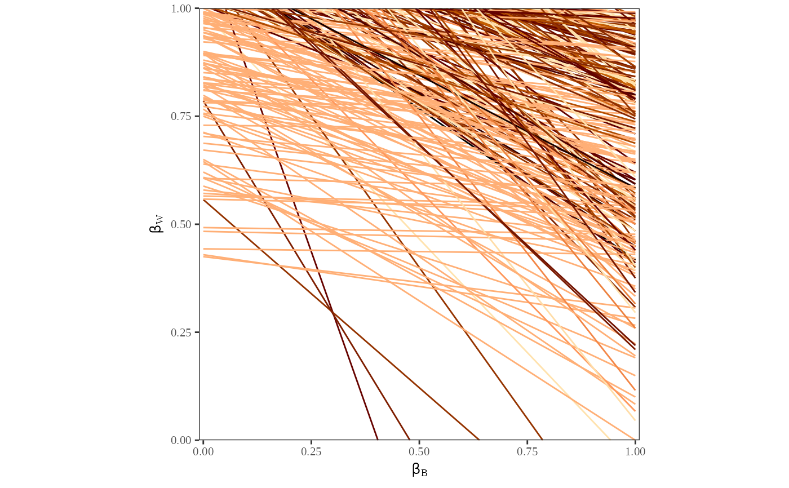
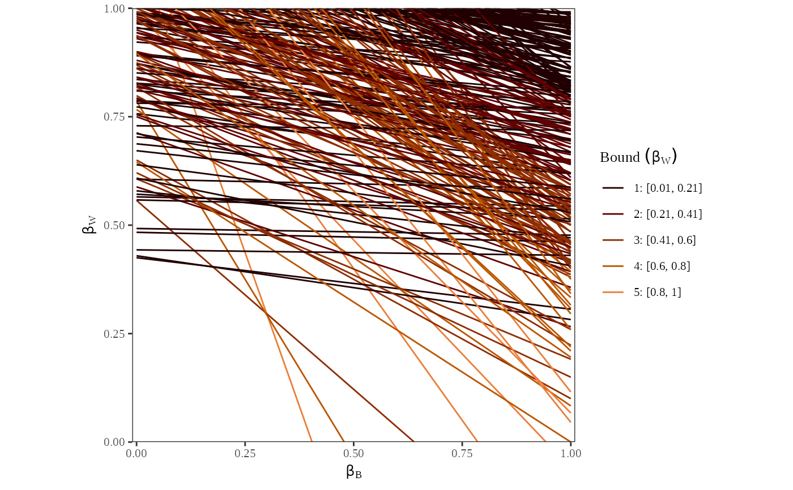
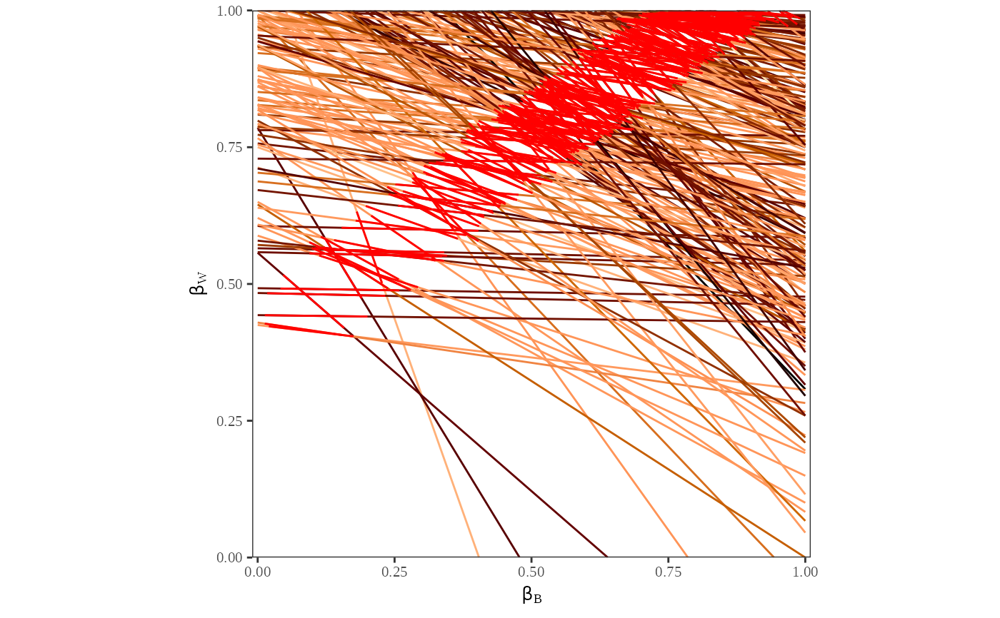
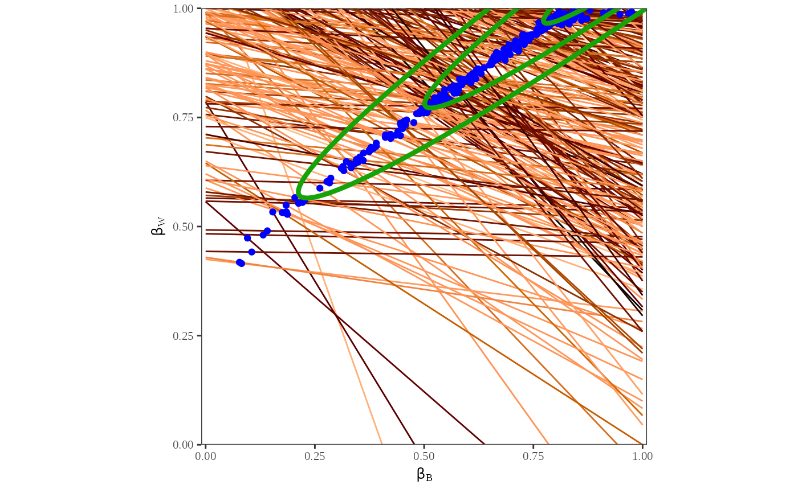

Tomography plot with various opitons.
Usage
plot_tomog(
ei.object,
options = list(color = TRUE, linecolor = "length", category = 0, breaks = "even", CI =
NULL, points = FALSE, contour_ML = FALSE, contour_posterior = FALSE)
)Arguments
- ei.object
The output of
ei()- options
The list of options
color: Change the line color by
linecoloroption.linecolor: Focus of the line color, options are
length,betab, andbetaw.category: Categorize values to color lines. The default value
0means that it does not categorize values. When creating categories, it uses the optionbreaks.breaks: How to create categories. Options are
evenandquantile.CI: Tomography plot with confidence intervals. The default value is
0.8(80points: Tomography plot with estimated mean posterior \(\beta_i^b\) and \(\beta_i^w\) points.
contour_ML: Tomography plot with ML contours.
contour_posterior: Tomography plot with mean posterior contours.
Examples
data(matproii)
suppressMessages({
ei_res <- ei(formula = t ~ x, total = "n", data = matproii)
})
plot_tomog(ei_res)
plot_tomog(ei_res, options = list(linecolor = "betab"))

plot_tomog(ei_res, options = list(linecolor = "betaw", category = 5))

plot_tomog(ei_res, options = list(CI = 0.8))

plot_tomog(ei_res, options = list(points = TRUE, contour_ML = TRUE))
